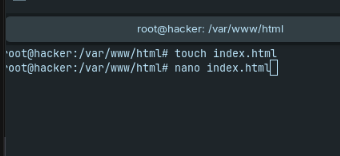
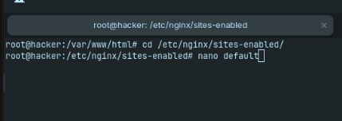

Konfiguráció:
1. Nginx feltelepítése:
- Szerintünk az apt parancsot nem nagyon kell magyarázni.
apt update -y && apt install nginx -y
- Ha nem dobott vissza semmi féle error-t akkor feltelepült a szolgáltatásunk
- 2. Hozzuk létre az alap weboldalunkat
- El fogunk menni az nginx default configjának megfelelő helyre, ott létrehozunk egy html fájlt, majd beleillesztünk egy html alapot.
cd /var/www/html
touch index.html
nano index.html
- Elmentjük a fájlt, vagyis kilépünk CTRL+X billentyűvel

- 3. most fogjuk configurálni magát a webszervert
- El kell menni az nginx default configjának a helyére azaz a /etc/nginx/sites-enabled és itt fogjuk szerkeszteni a configot
cd /etc/nginx/sites-enabled
nano default
- Ezek után custom beállításokat fogunk tudni beállítani, mint például a webszerver által használt portot, a fájloknak a helyét és akár az ssl security-t is.


4. szolgáltatás elindítása
Szolgáltatásunk elindítása a már megtanult parancs alapján.
service nginx restart
vagy
systemctl restart nginx